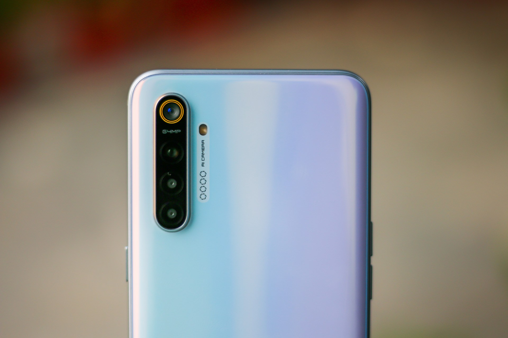
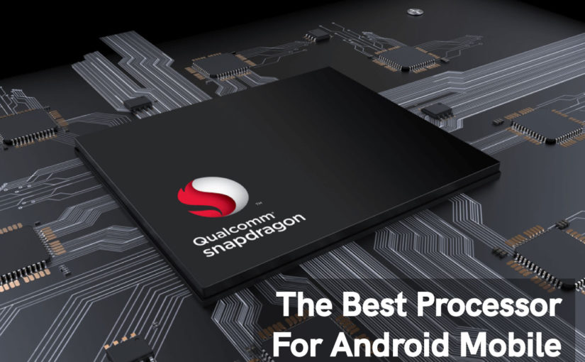
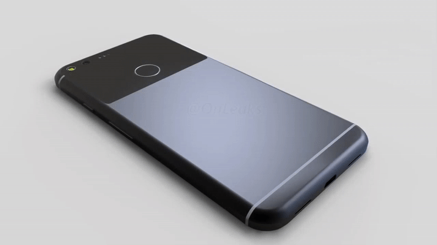
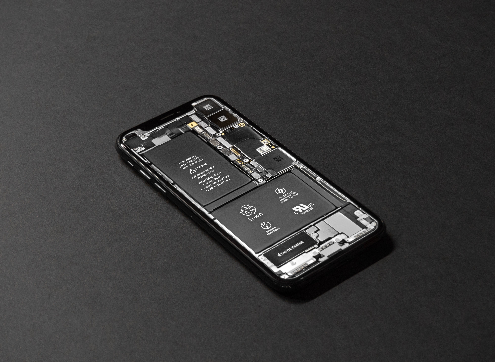

We have Best Camera Phones
The new ultrawide camera is just brilliant for travel photography, landmarks and spectacular interiors, and while it can't quite match the edge to edge image quality of the other lenses, it still produces sharp, distortion-free ultra-wide images that widen your horizons in every possible way.

We have Best Processor
At present, Qualcomm Snapdragon 855 Plus belong to the best smartphone processors. These five top processors are built on the currently most advancing 7nm manufacturing process and have good control on power consumption.

We have The Best Design
selfie camera underneath the display so you don’t have a notch or popup selfie camera. Having a completely bezelless phone would look cool but honestly is not practical as having a little bit of space would be necessary and more ergonomic when using the phone.. especially if the screen is large. Right now, we’re seeing Chinese brand phones with a motorized popup selfie camera which actually makes the display more immersive without any notches like on Apple or Samsung. Curved screens are out of style and isn’t “cool” anymore and it is more annoying than a flat screen.

We have The Best Battery
Smartphones have progressed to a great extent and have undergone many improvements. One major improvement comes in the form of battery performance. We provide many smartphones with capacious batteries and support for fast charging.